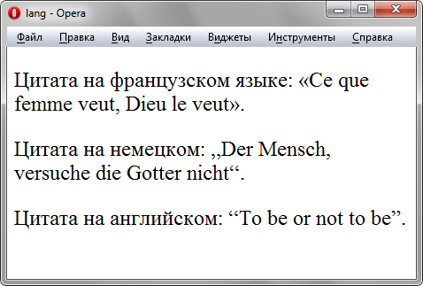

Псевдокласс :lang
Определяет язык, который используется в документе или его фрагменте. С помощью псевдокласса :lang можно задавать определённые настройки, характерные для разных языков, например, вид кавычек в цитатах.
Синтаксис
Селектор:lang(<язык>) { ... }Значения
В качестве языка могут выступать следующие значения: ru — русский; en — английский ; de — немецкий; fr — французский; it — итальянский и др.
Пример
<!DOCTYPE html>
<html>
<head>
<meta charset="utf-8">
<title>lang</title>
<style>
p {
font-size: 1.5em; /* Размер текста */
}
q:lang(de) {
quotes: "\201E" "\201C"; /* Вид кавычек для немецкого языка */
}
q:lang(en) {
quotes: "\201C" "\201D"; /* Вид кавычек для английского языка */
}
q:lang(fr), q:lang(ru) { /* Вид кавычек для русского и французского языка */
quotes: "\00AB" "\00BB";
}
</style>
</head>
<body>
<p>Цитата на французском языке: <q lang="fr">Ce que femme veut, Dieu le veut</q>.</p>
<p>Цитата на немецком: <q lang="de">Der Mensch, versuche die Gotter nicht</q>.</p>
<p>Цитата на английском: <q lang="en">То be or not to be</q>.</p>
</body>
</html>Результат данного примера показан на рис. 1. Для отображения типовых кавычек в примере используется стилевое свойство quotes, а само переключение языка и соответствующего вида кавычек происходит через атрибут lang, добавляемый к тегу <q>.

Рис. 1. Результат использования псевдокласса :lang
Спецификация
| Спецификация | Статус |
|---|---|
| Selectors Level 4 | Рабочий проект |
| Selectors Level 3 | Рекомендация |
| CSS Level 2 (Revision 1) | Рекомендация |
Браузеры
| Internet Explorer | Chrome | Opera | Safari | Firefox |
| 8 | 1 | 8 | 3.1 | 1 |
| Android | Firefox Mobile | Opera Mobile | Safari Mobile |
| 1 | 1 | 8 | 3.1 |